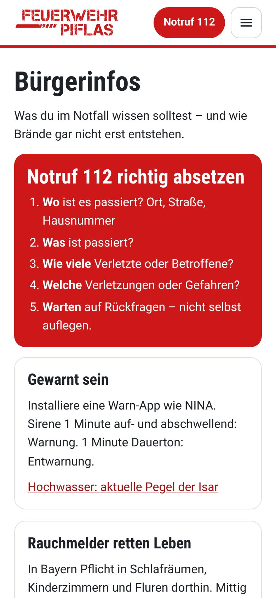
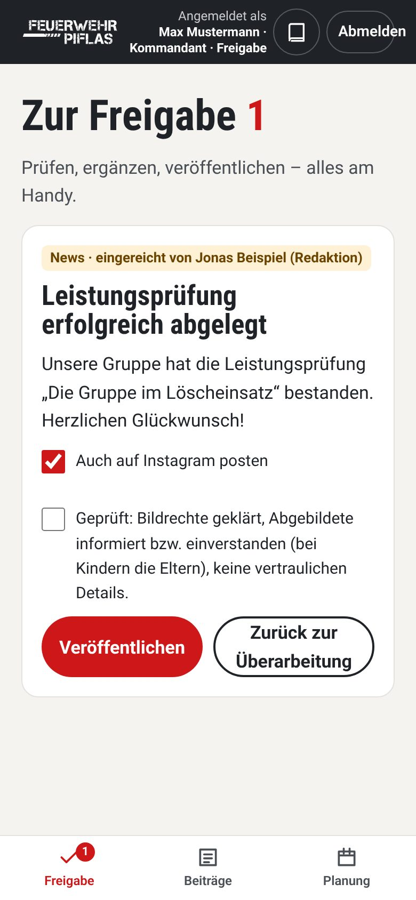
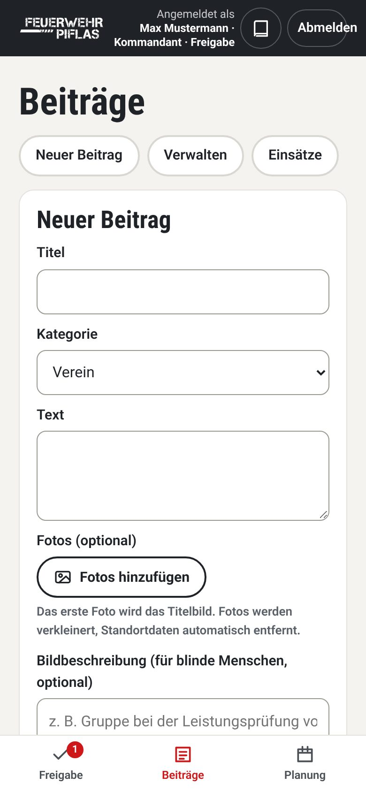

Die neue Website der Feuerwehr Piflas
Aktuelle Einsätze, Termine und Bürgertipps – gepflegt von Mitgliedern, freigegeben am Handy. Probier die klickbare Demo aus: öffentliche Seite und Mitgliederbereich.
- Keine Cookies
- Kein Tracking
- Am Handy bedienbar
- Pflege ohne IT-Kenntnisse
Was die Website kann
Gebaut mit WordPress auf dem Vereins-Hosting. Was sich wiederholt, läuft automatisch – was Menschen entscheiden müssen, geht schnell am Handy.
Einsätze aus DIVERA
Nach jedem Alarm entsteht automatisch ein Entwurf – nur Einsatzart, Ortsteil, gerundete Uhrzeit und Fahrzeuge. Keine Adressen, keine Namen.
Freigabe am Handy
Der Kommandant bekommt bei jeder Einreichung einen E-Mail-Hinweis, sieht auf einen Blick, was neu oder geändert ist, und gibt am Handy frei – mit Pflicht-Häkchen. Veröffentlicht wird frühestens zwei Stunden nach dem Alarm.
Mitmachen
Ein kurzes Formular ganz oben, Wege zur Jugendfeuerwehr und zur Fördermitgliedschaft. Frauen und Männer gleichermaßen willkommen.
Bürgerinfos
Notruf richtig absetzen, Warn-Apps, Sirenensignale. Der Tipp wechselt mit der Jahreszeit, Warntag und Probealarm werden angekündigt.
Instagram ohne Tracking
Freigegebene Beiträge gehen auf Wunsch auf Instagram. Die Vorschau holt der Server – Besucherinnen und Besucher übertragen nichts an Meta.
125 Jahre (2027)
Festjahr mit Countdown, Terminen und Rückblicken – erscheint zeitgesteuert und räumt danach von selbst auf.
Überblick nach Jahren
Hunderte Einsätze, Übungen und Berichte? Suche beim Tippen, Filter nach Art, Jahr und Status – alles in Sekunden gefunden und im Editor geändert.
Nichts geht verloren
Jede Änderung lässt sich rückgängig machen. Der Verlauf zeigt, wer wann was geändert hat – nur anhängen, mit Schutz vor Spam.
Robust bei Störungen
Fällt DIVERA oder Instagram aus, läuft die Website weiter. Fehlercode, Klartext, Notbetrieb – und eine Reparatur-Anleitung für die Technik.
Lernen für Aktive
Jeden Monat ein Thema vom Kommandanten mit kurzem Test – Inhalte nach den Feuerwehrschulen, verlinkt. Nur die Kommandanten sehen den Lernstand, keine Rangliste.
So sieht es aus
Bildschirmfotos aus der Demo, so wie am Handy. Alle Inhalte sind Beispiele.



Rechtssicher und einfach zu pflegen
Die Website gehört dem Verein und soll auch in Jahren noch von Ehrenamtlichen betreut werden können – ohne Programmierkenntnisse.
Dies ist eine Planung mit Beispielinhalten, keine Rechtsberatung. Datenschutz und Recht prüft vor dem Start eine Fachperson.
- DatensparsamKeine Cookies, keine Drittanbieter, keine Google Fonts. Fotos ohne Standortdaten.
- PersönlichkeitsrechteKeine erkennbaren Einsatzbetroffenen, Kennzeichen oder Adressen. Kinder nur mit Einwilligung der Eltern.
- Konten nur per EinladungRollen für Admin, Kommandant, Redaktion und Mitglieder – mit 2-Faktor-Anmeldung.
- Keine Spenden onlineWie in der Satzung festgelegt – Werbung für die Fördermitgliedschaft mit Formularen.
- Mit HandbuchSchritt-für-Schritt-Anleitung für alle Rollen, mit Bildschirmfotos.
Dokumente
Alles, was für Entscheidung und Umsetzung gebraucht wird.
Fahrplan
Jede Phase endet mit einer Abnahme durch den Verein.
- ErledigtPlanungLastenheft, Demo, Handbuch, Übergangsseite
- Als NächstesKlärung & ZugängeBetreuung, Hosting, DIVERA, Instagram, Abstimmung mit dem Markt
- GeplantAufbauWordPress, Rollen, Design, Mitgliederbereich, Inhalte
- GeplantStartDIVERA, Instagram, Schulung, Umzug auf feuerwehr-piflas.de